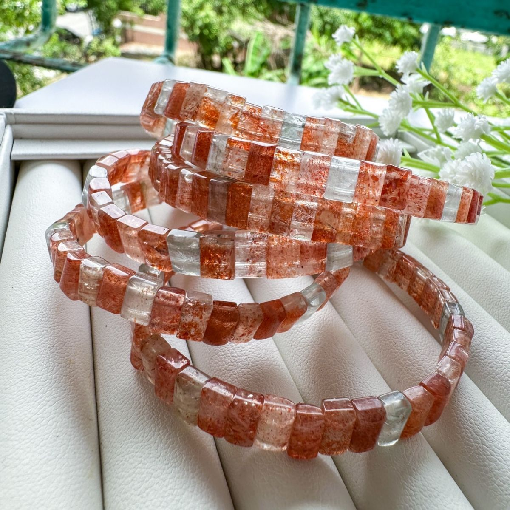

產地與礦物結構
產地背景
阿魯沙是地名，也出現在商品市場名稱裡；本款沒有可核對的原料產地證明。
礦物結構與名稱
「阿魯沙手排」為現有商品名稱，尚不足以確認所有礦物與內含物成分。手排是加工與串製形式，並非礦物結構名稱。
本頁產地是礦種資料中的產出紀錄，不代表照片中商品已完成產地鑑定；原料產地、加工地與販售地是不同資訊。
能量寓意與日常陪伴
自信與勇氣 · 行動力 · 事業祝福
網路分享常賦予阿魯沙自信、勇氣和行動力的寓意，適合寄託工作成長、朝目標前進的心願。阿魯沙是市場名稱，仍須依實際配石理解，並非成功或財富保證。
以上為網路資料中的民間能量說法與文化寓意，僅供介紹參考，不代表科學功效或效果保證。
適合怎麼搭配？
配素色襯衫或寬鬆日常上衣，讓手排自然成為重點。
日常保養
避免撞擊與拉扯，先確認手圍與鬆緊，再依材質清潔。
看完整保養指南 →官網上的 阿魯沙手排 款式
沿用商品原名稱與照片；售價、庫存及服務依賣場最新資訊確認。
礦石寓意與能量相關內容整理自網路資料，僅供介紹參考，並非科學功效或效果保證。